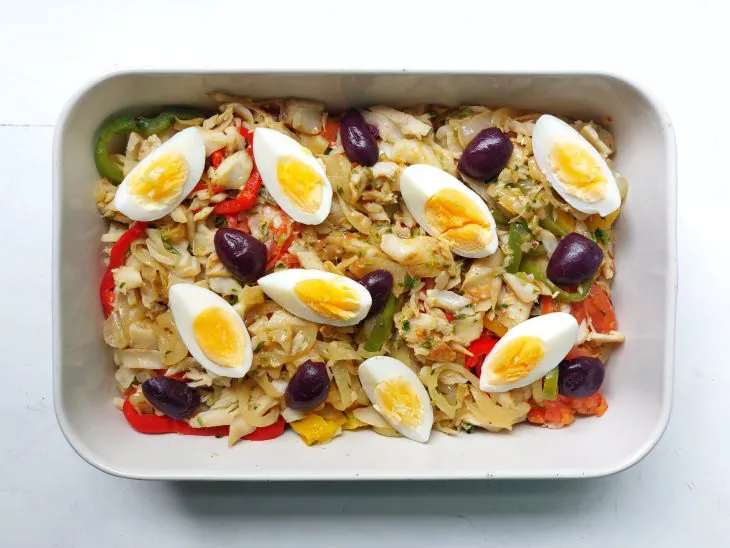

Bacalhau

Portuguese Language
Ingredientes:
- 500 gramas de bacalhau
- 6 batatas médias cortadas em fatias e cozidas
- 2 cebolas grandes em rodelas
- 1 pimentão pequeno amarelo em rodelas
- 1 pimentão pequeno vermelho em rodelas
- 1 pimentão pequeno verde em rodelas
- 1 tomate picado em rodelas
- 4 ovos cozidos picados
- 3 dentes de alho picados
- Sal a gosto
- Cheiro-verde a gosto
- Azeite a gosto
- Azeitonas a gosto
Modo de Preparo:
- Reúna todos os ingredientes;
- Em uma panela grande, coloque o azeite, o alho e deixe dourar;
- Adicione a cebola em rodelas até murchar;
- Em seguida, coloque os pimentões, os tomates, os temperos e o cheiro-verde. Misture e Refogue;
- Despeje o bacalhau já dessalgado na panela e incorpore;
- Deixe cozinhar por 2 minutos, desligue o fogo;
- Em uma travessa de ir ao forno, acomode as batatas cozidas no fundo;
- Coloque o refogado por cima e regue com muito azeite;
- Decore com os ovos cozidos e fatiados, as azeitonas e leve ao forno preaquecido a 180 °C por 10 minutos;
- Sirva e bom apetite.
Top of the page
Return to main page